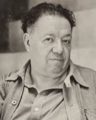

La gente en Mexico se distingue por una calidez profunda, un ingenio vibrante ante la adversidad y un espiritu de resiliencia inquebrantable que transforma los retos cotidianos en creatividad pura. Con un empuje constante y unas ganas infinitas de sobresalir, los mexicanos han superado fronteras geograficas e institucionales, demostrando que el talento nacional es capaz de liderar iniciativas de impacto global. Desde laboratorios cientificos hasta los escenarios artisticos mas prestigiosos del planeta, las mentes mexicanas han dejado una huella indeleble en la historia de la humanidad, impulsadas por el orgullo de sus raices y una incesante voluntad de superacion
| Ambito / Categoria | Icono o Logro Mexicano | Detalles Destacados e Impacto Internacional |
|---|---|---|
| Ciencia y Tecnologia |
Television a Color (1940) Pildora Anticonceptiva (1951) Premio Nobel de Quimica (1995) |
Guillermo Gonzalez Camarena invento el sistema tricromatico secuencial de campos, revolucionando la radiodifusion visual global Luis Ernesto Miramontes co-invento la noretisterona, base de la primera pildora anticonceptiva que transformo la sociedad mundial Mario Molina recibio el galardon tras descubrir las amenazas de los gases CFC a la capa de ozono, impulsando el Protocolo de Montreal |
| Artes y Literatura |
Apogeo del Muralismo (1922) Nobel de Literatura (1990) Consagracion en los Oscar (2013-2018) |
Diego Rivera, Siqueiros y Orozco redefinieron el arte publico global al pintar frescos con alta carga de identidad social e historica Octavio Paz obtuvo el maximo reconocimiento de las letras por su profunda e inteligente obra poetica de alcance universal Alfonso Cuaron, Gonzalez Iñarritu y Guillermo del Toro conquistaron Hollywood ganando de forma consecutiva la categoria de Mejor Director |
| Politica e Historia |
Tratado de Tlatelolco (1967) Premio Nobel de la Paz (1982) |
Mexico lidero y gestiono de forma diplomatica la proscripcion definitiva de las armas nucleares en toda America Latina y el Caribe El diplomatico Alfonso Garcia Robles fue galardonado con el Nobel por sus incansables esfuerzos en el desarme mundial |
| Ecosistema y Biodiversidad |
Pais Megadiverso Global Santuarios de la Mariposa Monarca Reserva de la Biosfera El Vizcaino |
Mexico forma parte del selecto grupo de naciones que albergan casi el 70% de la diversidad de especies del planeta entero Garantizo la proteccion de millones de mariposas en su migracion anual desde Canada, declarada Patrimonio de la Humanidad Establecio el santuario de reproduccion de la ballena gris en Baja California Sur, logrando recuperar con exito la especie |
Mario Molina |
Frida Kahlo |
Diego Rivera |
Guillermo del Toro |